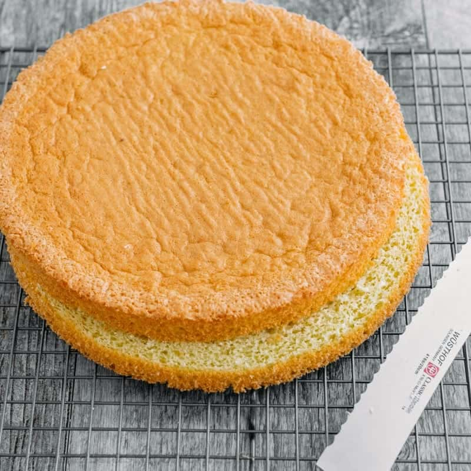

Sponge Cake

Once you master this easy European sponge cake (genoise), you can make hundreds of different cakes using this base!
6large eggs, room temperature1 cupgranulated sugar, 210 grams1 cupall-purpose flour, 130 grams½ tspbaking powder
Preheat Oven to 350˚F. Line bottoms of two 9″ cake pans with parchment paper (do not grease the sides).
In the bowl of an electric stand mixer fitted with whisk attachment (this is the one I have), beat 6 large eggs for 1 minute on high speed. With the mixer on, gradually add 1 cup sugar and continue beating 8-10 minutes until thick and fluffy.
Whisk together 1 cup flour and ½ tsp baking powder then sift this mixture into fluffy egg mixture one third at a time. Fold with a spatula with each addition just until incorporated. Scrape spatula from the bottom to catch any pockets of flour and stop mixing when no streaks of flour remain. Do not over-mix or you will deflate the batter.
Divide evenly between prepared cake pans (it helps if you have a kitchen scale to weight the pans). Bake at 350˚F for 23-28 minutes (my oven took 23-24 minutes), or until top is golden brown in the middle of the oven. Remove from pan by sliding a thin spatula (here’s the one I love for cakes) around the edges then transfer to a wire rack and remove parchment backing. Cool cakes to room temperature then slice layers equally in half with a serrated knife.